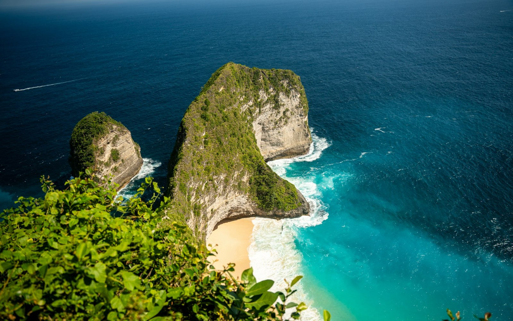
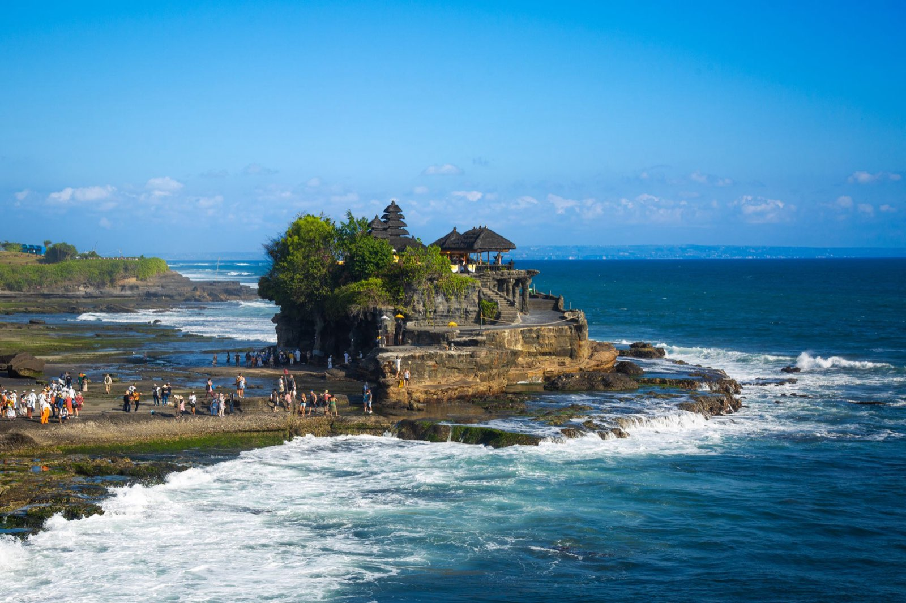
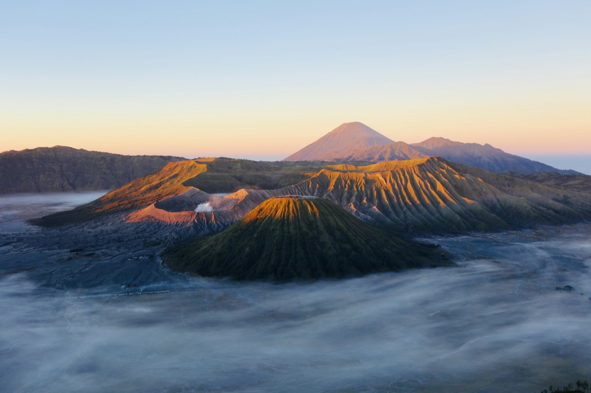
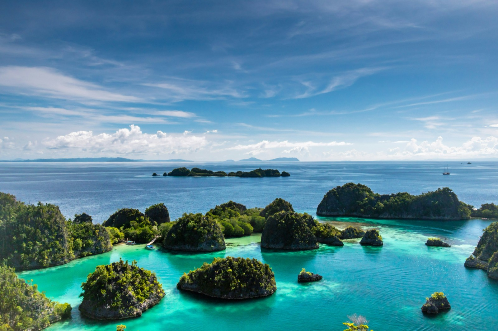
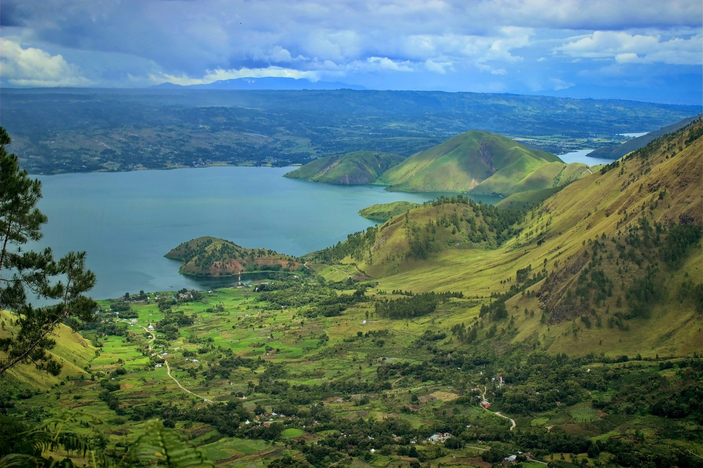
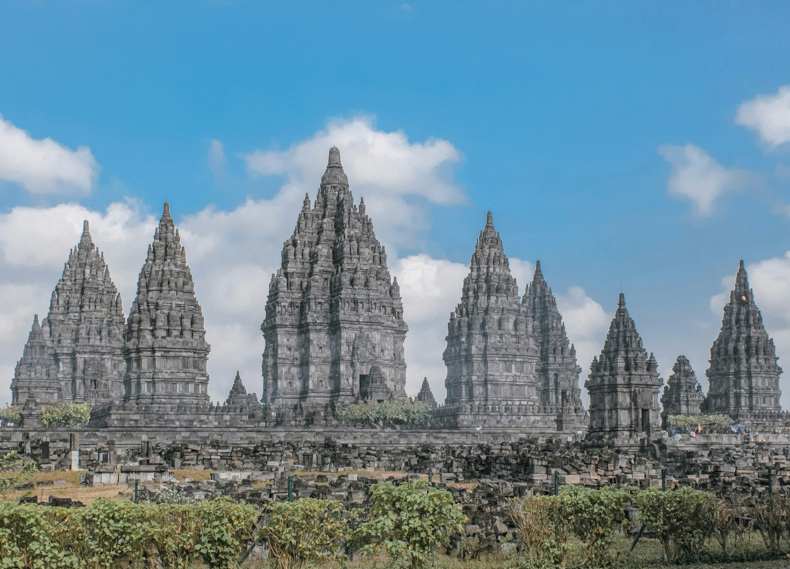

Wisata Indonesia
Mau ke mana liburan kali ini?
Enam tempat di Indonesia yang layak masuk daftar perjalananmu, lengkap dengan waktu terbaik untuk datang.
Lihat destinasi
Destinasi pilihan
Dari ujung barat sampai timur Indonesia.

Provinsi Bali
Bali
Pura Tanah Lot yang berdiri di atas batu karang, sawah berundak di Tegallalang, dan ombak Kuta yang ramah buat belajar surfing. Cocok buat liburan pertama ke luar Jawa.
Waktu terbaik: April sampai Oktober

Jawa Timur
Gunung Bromo
Berangkat dini hari ke Penanjakan untuk lihat matahari terbit, lalu turun ke lautan pasir dan naik ke bibir kawah. Udaranya dingin, jadi bawa jaket tebal.
Waktu terbaik: Mei sampai September
Nusa Tenggara Timur
Labuan Bajo
Pintu masuk ke Taman Nasional Komodo. Ikut kapal seharian untuk lihat komodo di Pulau Rinca, mendaki bukit Pulau Padar, lalu berenang di Pantai Pink.
Waktu terbaik: April sampai November

Papua Barat Daya
Raja Ampat
Ratusan pulau karst di tengah laut yang jernih. Terumbu karangnya terkenal di kalangan penyelam, tapi snorkeling di dekat pantai pun sudah kelihatan banyak ikan.
Waktu terbaik: Oktober sampai April

Sumatera Utara
Danau Toba
Danau vulkanik terbesar di dunia dengan Pulau Samosir di tengahnya. Di Samosir kamu bisa lihat rumah adat Batak dan makam raja di Desa Tomok.
Waktu terbaik: Juni sampai Agustus

DI Yogyakarta
Yogyakarta
Jalan kaki di Malioboro, mampir ke Keraton, lalu sore-sore ke Candi Prambanan. Jangan pulang sebelum makan gudeg.
Waktu terbaik: April sampai Oktober
Tips sebelum berangkat
Hal kecil yang bikin perjalanan lebih lancar.
01
Pesan lebih awal
Tiket pesawat dan penginapan cepat naik harganya saat musim liburan. Pesan dua sampai tiga bulan sebelumnya.
02
Cek cuaca
Kebanyakan tempat di atas paling enak didatangi saat kemarau. Lihat prakiraan cuaca seminggu sebelum berangkat.
03
Hormati adat setempat
Pakai kain atau sarung saat masuk pura dan tempat ibadah, dan minta izin dulu sebelum memotret warga.
04
Bawa pulang sampahmu
Pantai dan gunung tetap bagus karena pengunjungnya ikut menjaga. Siapkan kantong sampah sendiri.